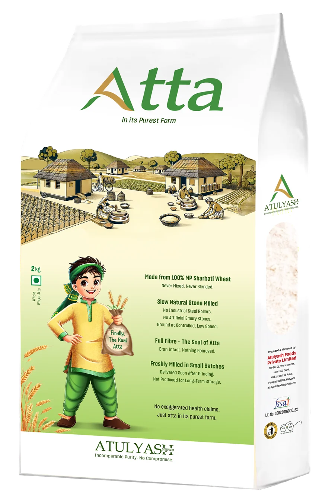

Milled yesterday.
At your door today.
Atta in its purest form. Ours is milled slowly on natural stone. Fresh, every week.
We question everything. Why not atta?
We keep changing everything around us. Our skincare, our cooking oil, even our utensils, because we research what is best for our family. So why don't we stop and think about our atta? Its quality, where it comes from, how it is made. We just take their word for it.
One single-origin wheat.
MP Sharbati. Never blended with other varieties.
Cleaned in several stages.
Ground on natural stone.
No emery stone, no steel rollers.
Packed with minimal handling.
Milled the day before.
In small batches, delivered the next morning.
Brought by our own riders.

Choose your pack. ₹120 a kg.
Bring home atta in its purest form.
 Atulyash
Atulyash